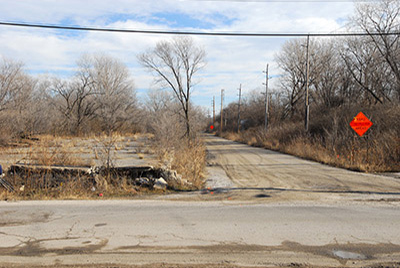

Visitors to the East St. Louis riverfront today encounter a pleasantly unkempt area whose form has attracted several specious plans for order, ranging from residential development to the scuttled CityArchRiver plans to extend the Jefferson National Expansion Memorial across the riverbank. Even Eero Saarinen and Dan Kiley wistfully envisioned the western end of East St. Louis, severed from the city by elevated interstate overpasses, as a placid and monumental space. R. Buckminster Fuller would have domed the area as part of his Old Man River City plan in 1971. All of these plans blithely stepped over the fact that this area essentially is an overgrown sandbar once named Bloody Island.
Today the land mass is partially riparian, with forested wetland occupying the majority of the area. The Eads Bridge approach to the north bounds a cluster of buildings at the north, including the Casino Queen complex and the venerable reinforced concrete grain silos now operated by Cargill. At the center is the inscription of monumental history in the form of the Gateway Geyser, the Macolm W. Martin Riverfront Park, and a clean, modern concrete overlook that allows visitors to peer at St. Louis’ skyline over the levee. The riverfront park responds to the Gateway Arch, and presents a puzzling emphasis on a mode of tourism that seems asynchronous with the rugged character of the area.
At the turn of the nineteenth century, there was no land mass here—only the wide expanse of the Mississippi River. By 1810 a small sandbar was evident at the north end of the riverfront. By 1817, after the Village of Illinois (later Illinoistown and still later East St. Louis) was platted, the sandbar was large enough to be named an island on maps. That same year, Thomas Hart Benton challenged Judge Charles Lucas to a duel, and the pair elected to stage the duel on the island. After Benton slay Lucas, the island took on the name Bloody Island, and four other reported duels followed.
After Bloody Island’s growth continued, the land mass looked like a permanent gulf between the emergent settlement on the Illinois side and the city of St. Louis. In 1827 Samuel Wiggins purchased the island in order to complete his control of the Illinois riverfront. Wiggins had operated the Wiggins Ferry at St. Louis since 1820 and garnered a monopoly on river transportation. By 1829 Wiggins’ purchases—which included all of 900 acres of riverfront behind Bloody Island—made sure that there was no competition in transferring goods across the river within two miles. Later, the Illinois General Assembly granted the Wiggins Ferry Company the right to perpetual succession in 1853, creating the largest blockage on constructing a bridge at St. Louis.
By the 1830s a series of bars emerging from Bloody Island threatened to close the Mississippi River channel at St. Louis to navigation. The river current shifted to the east, so that the channel between Illinoistown and Bloody Island was the only channel with a current swift enough to sufficiently stay clear of obstructive bars. The north end of Bloody Island eroded away, carried to the southern end where the island grew further. Landing at the St. Louis wharf became a feat of courage, and the city feared its demise as a trade port. Alton, Illinois, located on a clear section of the Mississippi, began assuming that it could usurp St. Louis as the regional port. In 1837 the US Army Corps of Engineers assigned Lieutenant Robert E. Lee the task of preventing the closure of the channel at St. Louis. At the northern end of the eastern channel, Lee designed a dike, which was not fully constructed until 1847. Lee’s intervention redirected the river current to the western channel and led to the complete cessation of current to the east.
By 1865 Bloody Island was part of East St. Louis, and became its Third Ward. However, the sandy soil proved inappropriate for major construction, and East St. Louis’ urban core remained distant from St. Louis. Instead the old island became the site of a massive collection of rail freight terminals to the north and south of the Eads Bridge. One of the last major freight terminals to disappear was the warehouse, track and freight lanes built by the Big Four Railroad just south of the Eads Bridge. By 1991 the entire complex was wrecked to build the first incarnation of the Casino Queen. The Casino Queen’s generation of monopoly tax revenue was supposed to be a contemporary fix on economic vitality for East St. Louis, but its heyday ended when Missouri authorized its own casinos by the mid-1990s. Strangely, Bloody Island’s inclusion in various schemes for tourism has not laid any claims on its actual heritage. Tales of river navigation, duels among St. Louis’ elite, monopoly land ownership, and the deeds of Robert E. Lee seem to present endless interpretive fodder, as well as footholds in grand national narratives. Instead Bloody Island remains the scene of economic extraction, caught up in a generic and nearly placeless monumentalism.
Intangible Heritage on the American Bottom